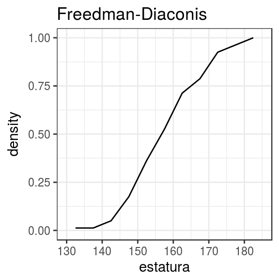
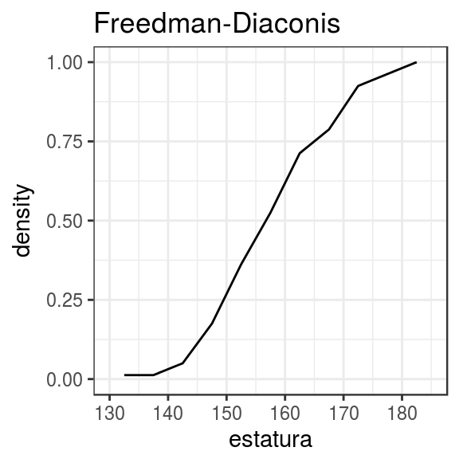
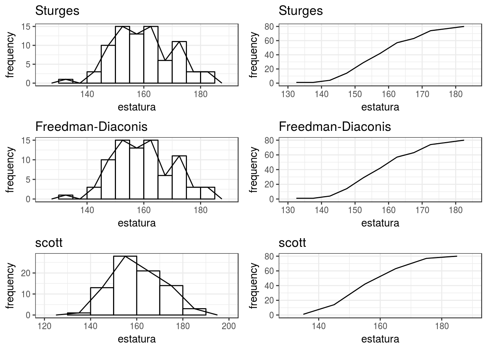

En el módulo de estadística computacional de la maestría en Estadística Aplicada de la Universidad del Norte, tuve la oportunidad de desarrollar un paquete para R que produce tablas de distribución de frecuencias, histogramas y polígonos de frecuencia con dplyr y ggplot2. Utilizar estos paquetes permiten gran versatilidad en las salidas de las funciones, por ejemplo, usar tuberías (pipes) para hacer modificaciones en los marcos de datos cuando se producen tablas de frecuencias o capas de ggplot2 para las gráficas.
Debido a que el paquete es producto de una actividad académica y no de una necesidad personal, los resultados que genera son relativamente triviales a lo que un usuario de R pueda necesitar; por lo tanto, no dejará de ser un ejercicio para mejorar el desarrollo de paquetes para R. Sin embargo, en caso de resultar útil de alguna forma, cualquier tipo de freedback será bienvenido.
El paquete histogramR se puede descargar desde el siguiente repositorio de Github https://github.com/rodianf/histogramR. Las instrucciones de instalación y algunos ejemplos también se pueden consultar desde el documento Readme del repositorio. El camino a seguir será mejorar la eficiencia de las funciones y seguir aprendiendo en el proceso.
A continuación algunos ejemplos de lo que histogramR puede hacer.
library(histogramR)
library(knitr)
estatura <- rnorm(80, 160, 10)
tab_freq(estatura) %>%
rename(Frecuencia = f,
"Frecuencia relativa" = rf,
"Frecuencia acumulada" = cf,
"Frecuencia relativa acumulada" = crf) %>%
kable()| estatura | Frecuencia | Frecuencia relativa | Frecuencia acumulada | Frecuencia relativa acumulada |
|---|---|---|---|---|
| [130, 135) | 1 | 0.0125 | 1 | 0.0125 |
| [140, 145) | 3 | 0.0375 | 4 | 0.0500 |
| [145, 150) | 10 | 0.1250 | 14 | 0.1750 |
| [150, 155) | 15 | 0.1875 | 29 | 0.3625 |
| [155, 160) | 13 | 0.1625 | 42 | 0.5250 |
| [160, 165) | 15 | 0.1875 | 57 | 0.7125 |
| [165, 170) | 6 | 0.0750 | 63 | 0.7875 |
| [170, 175) | 11 | 0.1375 | 74 | 0.9250 |
| [175, 180) | 3 | 0.0375 | 77 | 0.9625 |
| [180, 185] | 3 | 0.0375 | 80 | 1.0000 |
plot_freq(estatura, nclass = "FD")
plot_freq(estatura, nclass = "FD", density = TRUE, cfp = TRUE) 

comparacion <- nc_comp(estatura)
summary(comparacion)## Class number methods comparison.
##
## method nclasses
## 1 Sturges 8
## 2 FD 8
## 3 scott 6
##
## Summary of input vector:
##
## Min. 1st Qu. Median Mean 3rd Qu. Max.
## 134.1 152.1 158.9 159.8 166.5 184.3ggplot(comparacion)